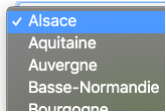
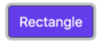
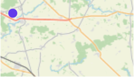
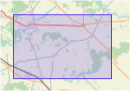
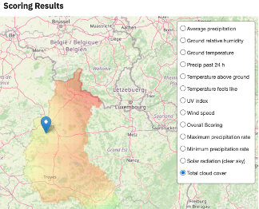

PAIRS Geoscope for Vineyard Discovery
Version 1.0
Define a reference plot of land and based on geological and meteorological criteria such as wind, drought, climate, altitude etc. to find new exploitable areas that meet the criteria of excellence of customer's vineyard, using PAIRS capabilities.
IBM PAIRS GEOSCOPE is a platform, specifically designed for massive geospatial-temporal data (maps, satellite, weather, drone, IoT), query and analytics services. It frees up data scientists, developers from the cumbersome processes that dominate conventional geospatial-temporal data acquisition and preparation and provides search-friendly ready access to a rich, diverse, and growing catalog of historical and continuously updated geospatial-temporal information.
Tutorial
The 3 blue dots represent the 3 steps required to complete your search for a new exploitable areas and they are the breadcrumbs
Step 1 : select your reference field
- Start with the time frame by choosing a start and end date to retrieve data for a reference field (1 month is selected by default)
- Identify the reference vineyard by pointing the source zone on the map
- Then press button to submit your request
Step 2 : adjust search criterias and select region to explore
Criterias
This page shows the results from your previous request. You can see the characteristics of the field in the text : Ref values : [minimum value found < mean value found > max value found]
Once you have looked at the results, you can adjust the result by selecting the points and sliding them with the mouse.
They may also be taken out of your query if you deselect them.
Area of search
Select an area of investigation for a new field among two options :
- Select a French region 
- Click on the rectangle button 
- To start drawing your rectangle, click on the first top left angle of your rectangle
- Then click on the bottom right to complete it.
Submit your request by clicking
Step 3 : display overall results
Scoring in progress is displayed while the calculations are in progress.
Scoring result gives the overal information about your request and more detailled data is provided with
Select each criteria to have a more specific result.
Result : 